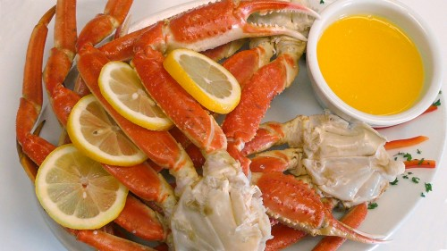

The Ultimate Crab Platter!

Sushi at it's best!

Fare
Fare in seafood restaurants may include fresh and frozen fish, shellfish, crawfish, shrimp, crab, lobster, mussels and oysters. Some have a raw bar area where raw shellfish products are prepared, such as raw oysters.
Popular US Seafood Restaurants
- Aquagrill
- Arthur Treacher's
- Atlantic Grill
- Bahrs
- Boston Sea Party
- Le Bernardin
- Bonefish Grill
- Bubba Gump Shrimp Co.
- Colonnade
- Country Bill's
- The Crab Claw Restaurant
- Dan and Louis Oyster Bar
- DiMillo's Floating Restaurant
- Driftwood Inn and Restaurant
- Eddie V's Prime Seafood
- Gladstones Malibu
- Jacob Wirth Restaurant
- Jake's Famous Crawfish
- Joe's Crab Shack
- Joe's Stone Crab
- Landry's Seafood
- Legal Sea Foods
- Long John Silver's
- Lundy's Restaurant
- McCormick & Schmick's
- McGrath's Fish House
- Mitchell's Fish Market
- Ocean Prime
- One If By Land, Two If By Sea Restaurant
- Oyster Bar
- Red Lobster
- Roy's
- Shuckum's Oyster Bar
- Skippers Seafood & Chowder House
- Ted Peters Famous Smoked Fish
- The Crab Cooker
- Umberto's Clam House
- Union Oyster House
- Weathervane Restaurant
- Woodman's of Essex